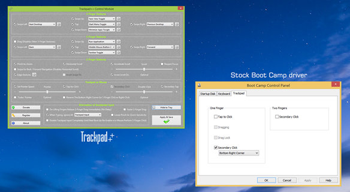

Trackpad++ is the world's first and only alternate Windows driver for Apple Multi Touch and Force Touch trackpads found in Apple Macbook, Macbook Pro / Retina and Air notebooks. Trackpad++ driver comes with a Control Module, the comprehensive control panel.
Trackpad++ is developed by authors of the popular Power Plan Assistant utility (multiple award-winning tool with unique Macbook-enhancing features, designed specifically for Windows Boot Camp environment). Also check out our ExtraMagic software (the only multi touch gestures enabler for wireless Apple Magic Trackpad and Magic Trackpad 2 on the Windows platform).
Supported Models
Macbook Pro
Macbook Pro Retina
Macbook Air
Macbook
Supported operating systems: Microsoft Windows 7 (32-bit / 64-bit), Windows 8 / 8.1 (32-bit / 64-bit), and Windows 10 (64-bit).
Please note, our driver and control panel installer is meant only for the built-in trackpads of the Macbook models listed above.
To learn about ExtraMagic, our new solution for the wireless Magic Trackpad and Magic Trackpad 2, please click here
1. Install Power Plan Assistant if it is not already installed.
If you have a 64-bit installation of Windows, installing Power Plan Assistant will allow you to override the Microsoft's digital signature enforcement policy. The 32-bit versions of Windows 7, 8, 8.1 and 10 are more lenient, however the 64-bit versions require cross-signing by Microsoft.
Since cross-signing of the 64-bit drivers is expensive, and to keep the Trackpad++ driver and Control Module as donationware, the Power Plan Assistant is required on 64-bit systems to install the Trackpad++ driver correctly.
This does not affect your system's security. You will get a warning window with a red header when you attempt to install a driver not approved by Microsoft. Please note, this is the mandatory step. If the Power Plan Assistant is not installed, Trackpad++ driver installation will fail.
2. Launch the Trackpad++ installer (requires reboot).
If you are upgrading from an earlier version, please close the Trackpad++ Control Module before starting the installer! To do so, right click the notification area icon (a small ‘++’ icon), choose ‘Exit’ and proceed with installation.
The installer works on both 32-bit and 64-bit versions of Windows. Follow the simple on-screen instructions to install the software and driver.
The package installs the Trackpad++ driver and Control Module software. Your computer will need to be restarted and will do so automatically at the end of the installation. It is recommended to close the running programs, pause downloads, etc., before you start the Trackpad++ installation procedure.
During setup, a window with a red header may appear. This is normal. In this window click 'Install this driver software anyway'.
Q.: What does the Trackpad++ Control Module user interface look like?
A.: Here is a screen shot. (Note: in the most recent version, both the appearance and the features may be different).
Q.: Why alternate trackpad driver for Windows 7 / 8 / 10?
A.: Apple trackpads are the perfect, probably world's best, touchpad devices. And the OS X native driver is good: it unleashes almost all of the amazing trackpad capabilities. But the stock Windows driver provided by Apple for Boot Camp is, unfortunately, very far from being perfect. No support of 3+ finger gestures. No accelerated scrolling (yet the scrolling is too sensitive!). Dragging is just usable. And there is no vital option to ignore accidental input when typing. This is just an incomplete list of the issues every Boot Camp user is experiencing. So, the need of the better trackpad driver is obvious. In fact, if you are asking this question, i.e. "why?", you probably had never tried to use Windows on an Apple Macbook Retina / Pro / Air :)
Q.: Do I need to install the Boot Camp drivers first? What are the supported Boot Camp and Windows versions?
A.: Yes, you need to install the Boot Camp drivers first. The supported Boot Camp versions are 3.0 - 3.3, 4.0, 4.1, 5.0, 5.1 and 6.0
Q.: Which devices except of the Unibody Macbook Pro and Macbook Air are supported?
A.: NONE. The only supported devices are: Macbook 12" Early-2015 (Force Touch), Macbook 13"/15" Early-2015/Mid-2015 (Force Touch), and the classic Multitouch models, as following: Macbook Pro (Mid 2009, Mid 2010, Early 2011, Late 2011, Mid 2012 / Retina, Late 2012 / Retina, Early 2013 / Retina, Late 2013 / Retina, Mid 2014 / Retina) and Macbook Air (Late 2010, Mid 2011, Mid 2012, Mid 2013, Early 2014, Early 2015).
If you search specifically for a wireless Magic Trackpad / Magic Trackpad 2 driver installer and control panel for Boot Camp or PC, please see our new solution for Magic Trackpads, an ExtraMagic.
Q.: Is it safe to install the Trackpad++? And, just in case, how do I remove the driver?
A.: Yes, it's completely safe to install. Just follow the simple installation instructions. Basically, the only requirement is to install the Power Plan Assistant software first. In fact, the Trackpad++ does not interfere with any of the Boot Camp drivers installed. Instead, it seamlessly integrates into your existing Boot Camp installation. The setup procedure is transparent and fully automatic.
If you would like to remove the Trackpad++ from your system, you can simply uninstall the Control Module (as you do with any Windows application - via Windows Control Panel) and, optionally, roll back to a "HID-Compliant Mouse" driver via Windows 7 / 8 Device Manager. When the Trackpad++ Control Module is not installed anymore, the system will use the settings of the Boot Camp control panel, as if the Trackpad++ had never been installed.
Q.: Even with Trackpad++, the scrolling in my web-browser isn't as smooth as in Mac OS X (Safari). Any suggestions?
A.: First of all, even in Mac OS X, other browsers do not provide the same ultra-smooth experience as Safari. So, the question is not just about the trackpad driver settings, but about how each specific browser handles the scrolling events it receives from the driver. For Windows, the answer would be - consider using the Firefox or Edge / IE 11 web-browsers. These browsers work best with Trackpad++, providing almost as smooth and as intuitive scrolling experience as Safari in Mac OS X. As to the rest of the browsers, the experience may not be that perfect. But anyways, the Trackpad++ significantly improves the scrolling behavior vs. Boot Camp driver, so you will get a noticeable improvement regardless of the web-browser you are using.
Q.: I have got a question which is not listed there! How can I get an answer?
A.: Please feel free to contact us.
Message from Vlad Plenskiy, developer of Trackpad++:
Dear Trackpad++ User,
If you would like to donate for the Trackpad++ development, please perform the transaction manually, directly via PayPal web site.
Our PayPal email ID: vladimir.fcluster@gmail.com
The recommended donation is 15 EUR or 15 USD. If you can support the development by contributing more, this is much appreciated.
IF YOU WISH TO RECEIVE THE PERSONAL SERIAL NUMBER,
PLEASE PERFORM THE FOLLOWING STEP AFTER DONATING:
Please send an email to our support address with the subject "Trackpad++ S/N request for donator Your_Paypal_Email".
We will respond and assign the Personal Serial Number to you as the donator. Currently we process the requests manually within 12 hours. Also at your request we can at any time re-send the message to your preferred email address or even MSN / Skype / etc. accounts.
Thank you very much!
Trackpad++ installer for Windows 7 / 8.1 / 10, version 3.1e:
Download Trackpad++ at FileCluster.comDate of release: 01/21/2016
Please read the Installation Instructions before continuing.
To ensure proper driver installation on 64-bit systems you must install Power Plan Assistant first. For 32-bit operating systems, this is optional.
NOTICE: Trackpad++ Control Module is free, but requires mandatory weekly update. If the week has passed and Trackpad++ Control Module was not updated, Trackpad++ driver will be using the Boot Camp driver settings, unless the Trackpad++ Control Module is updated. Trackpad++ setup automatically installs/updates both the Trackpad++ driver and the Trackpad++ Control Module.
Trackpad++ is 100% free of viruses and adware. Please see the comprehensive VirusTotal report
Email address for questions, enquiries and technical support: support@powerplan7.com
Please feel free to contact us! This inbox is monitored daily.
Please note, this is NOT our PayPal email address. For details on how to donate, please click here
{kind=link}